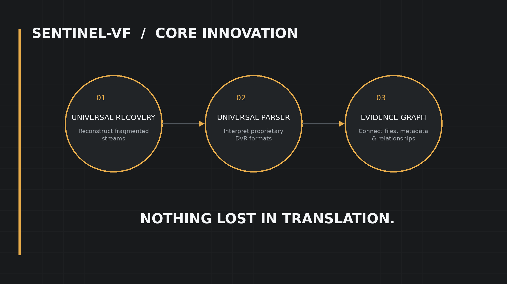
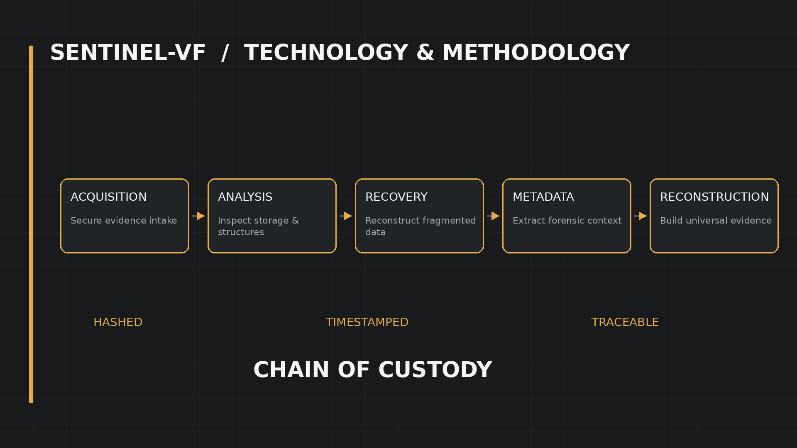
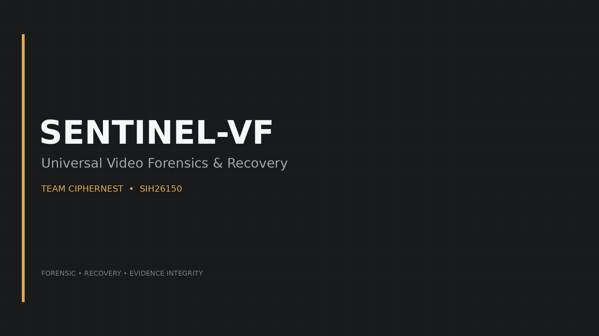

Universal Video Forensics & Evidence Integrity Framework
SENTINEL-VF is a forensic analysis framework designed to standardize DVR/NVR evidence acquisition, verification, timeline reconstruction and evidence reporting.
Traditional CCTV forensic investigation faces challenges due to vendor-specific DVR/NVR formats, missing metadata, timestamp inconsistencies and difficulty in maintaining evidence integrity.

SENTINEL-VF provides a unified workflow for recovering, validating and analysing surveillance evidence.


Support more DVR/NVR vendors, advanced AI-assisted analysis, automated evidence validation and investigation support.